Solução para o Erro
Clique em um dos cartões abaixo para visualizar a solução completa.
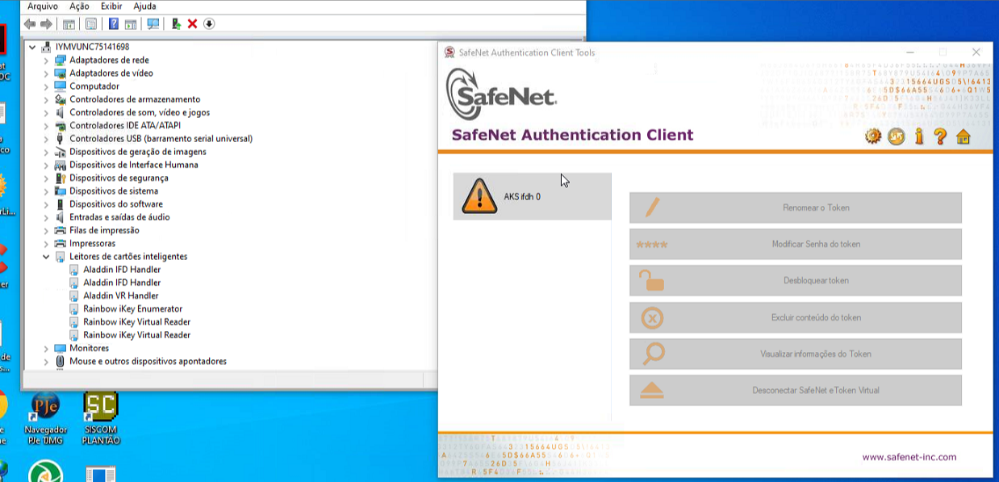
AKS ifdh 0
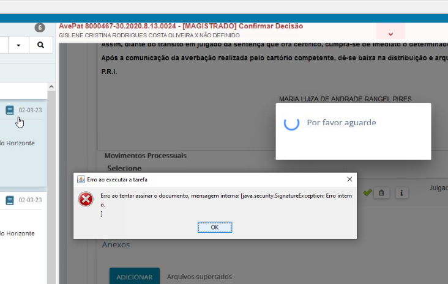
Java.security
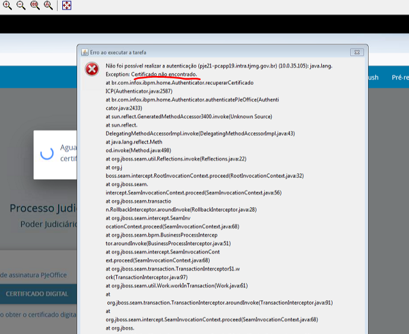
Certificado não encontrado
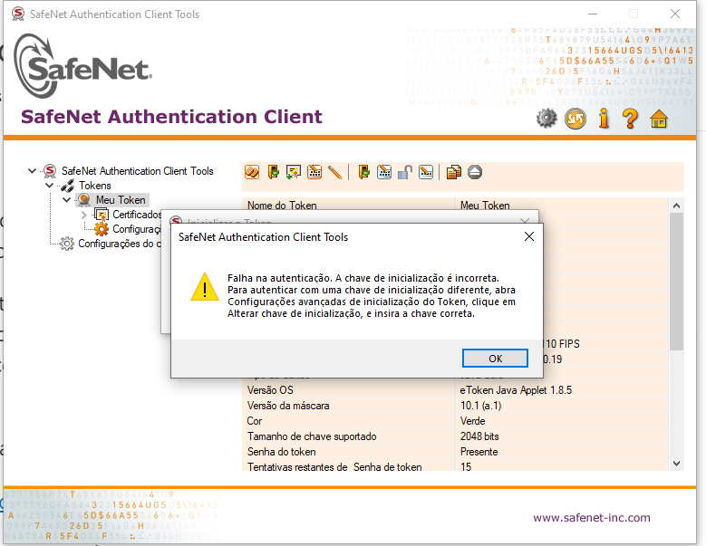
Falha na autenticação
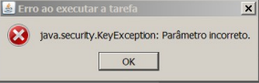
Parâmetro Incorreto
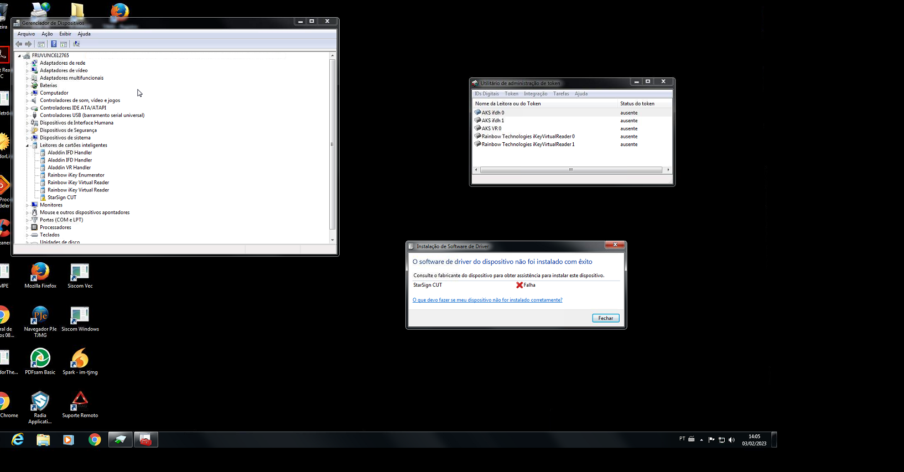
O software do driver não foi instalado com exito
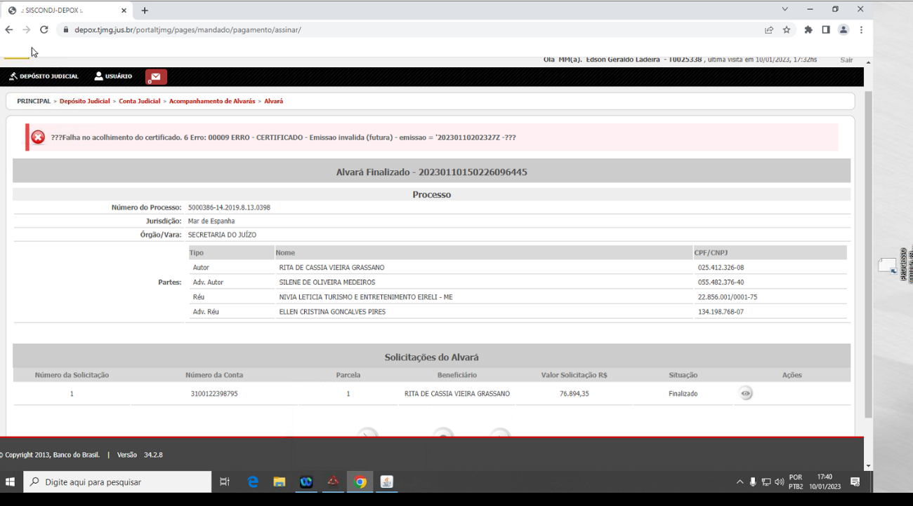
Falha no acolhimento do certificado
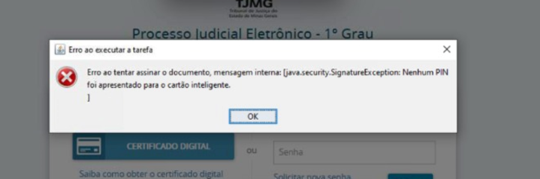
PIN bloqueado
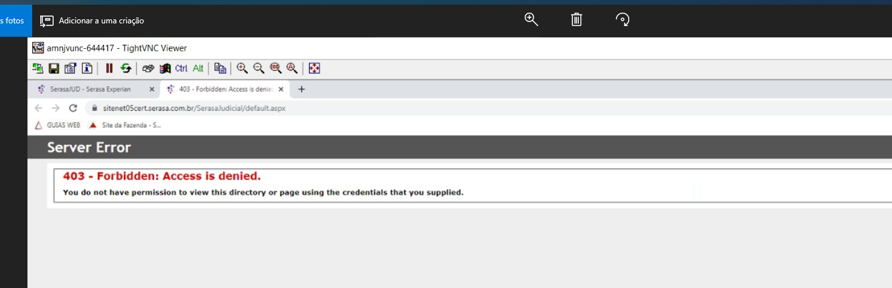
403 - Forbidden
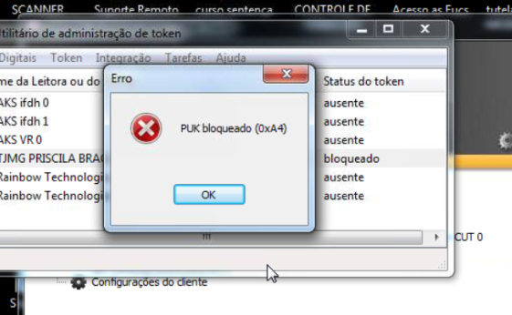
PUK bloqueado
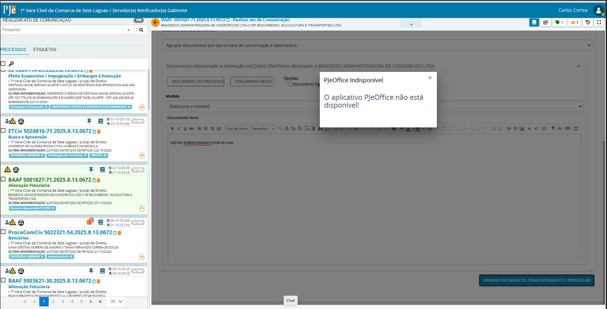
O aplicativo PjeOffice não está disponível!